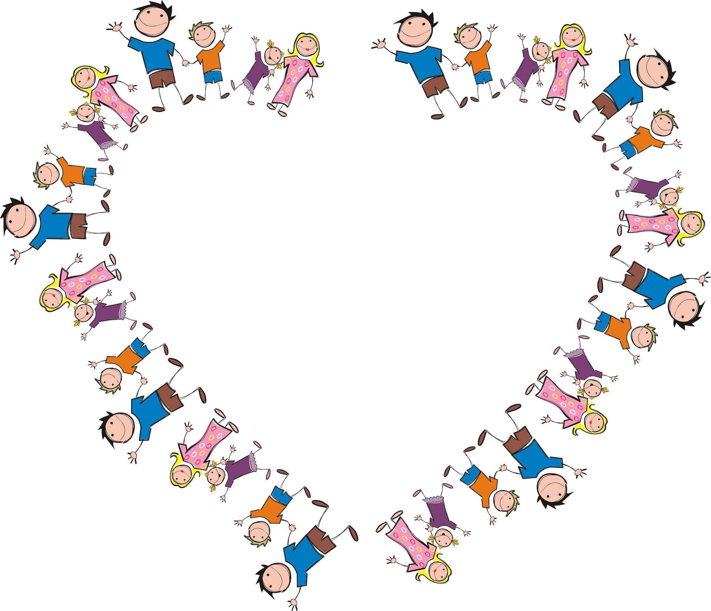

With children who display challenging behaviour in class or on the playground:
- Through early intervention programmes, delivered by an experienced practitioner, young people can start to explore a better way of communicating their needs.
With the requirement for children to achieve consistent and progressive grades:
- It is often difficult to address the behaviours that may be displayed by individuals or groups of children with difficulty communicating, which prevents others' learning. Whilst teachers may really want to help, it may be impossible to achieve desired changes within the restraints of teaching time and the curriculum.
With an upcoming Ofsted Inspection:
- You may not have the time or resources to resolve these problems quickly. We can help identified students to start to learn soft skills, self-regulate, and learn strategies to modify or enhance communication. This will enable the remaining students to move further along their learning journey without possible peer distraction or interruption.
WE CAN HELP. Consequently, we can write, plan, and lead these sessions in a course for specific students with a view to improving ways of thinking and doing.